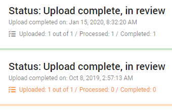

Search for a specific upload with

While waiting for your upload(s) to be processed, please continue with review by clicking

Create a .csv report of all listed uploads by clicking
Create a .csv report of one upload (with all uploaded files) by clicking

Recommendation
- Upload less than 100.000 documents per instance, with a maximum of 500 GB (total file size).
-
ZIP data first in order to maintain the file properties such as date created, date accessed, etc.
Exception: The file property 'date modified' is always maintained.
Add New Upload
Select 
After defining and starting your upload, you will return to the main Upload page. Here you can view the status and progress of all uploads. For more information, see Upload.

Options per Upload
You can choose to pause/resume, delete, retry an upload or download the uploaded files/folders using the icons behind each upload.
The available options depend on the status of the upload.